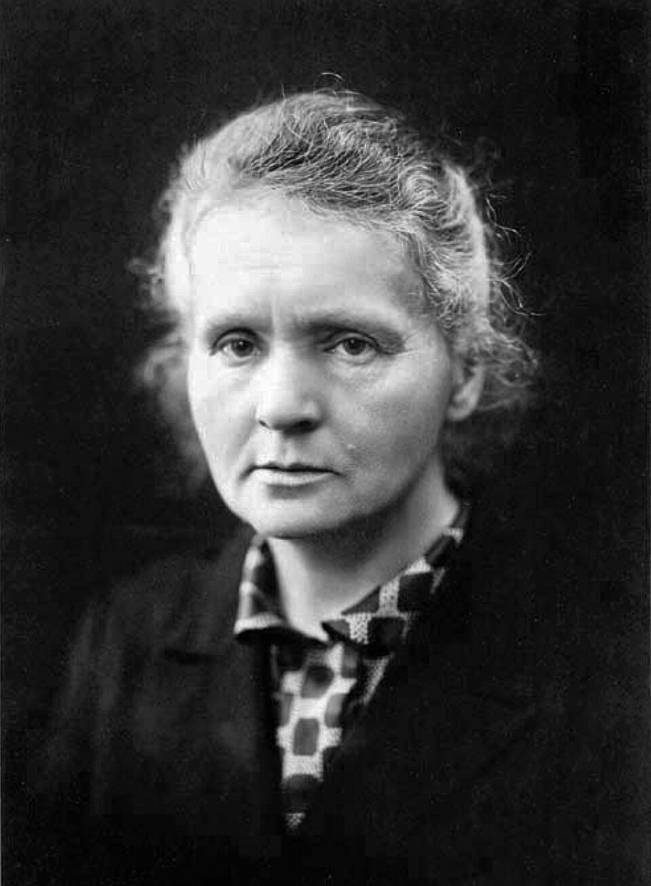
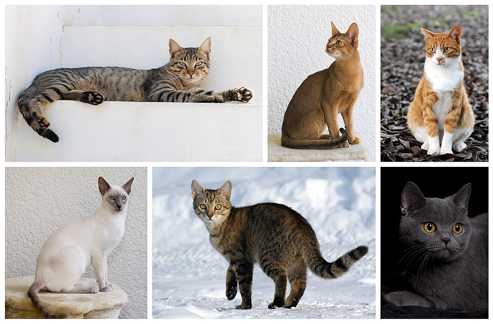

🛡️ פֿילטער פּלאַטפאָרם — טעסט בלאַט
דאָס בלאַט פּרüווט די בראַוזער עקסטענשאַן: מענטש־בילדער זאָלן בלאקירט / באַדעקט ווערן, אַנדערע בילדער זאָלן בלייבן.
סטאַטוס (לעבט פֿון דער עקסטענשאַן)
וואַרט אויף עקסטענשאַן…
אָפּטיילונג 1 — בילדער מיט מענטשן (3)
Einstein — פּנים, ערוואַרט: מענטש
Obama משפּחה — עטלעכע פּנימער, ערוואַרט: מענטש

Marie Curie — פּנים, ערוואַרט: מענטש
אָפּטיילונג 2 — בילדער אָן מענטשן (3)
 עפּל — ערוואַרט: קיין מענטש
עפּל — ערוואַרט: קיין מענטש

קאַץ — ערוואַרט: קיין מענטש
 ערד פֿון קאָסמאָס — ערוואַרט: קיין מענטש
ערד פֿון קאָסמאָס — ערוואַרט: קיין מענטש
אָפּטיילונג 3 — CSS הינטערגרונט בילד (מענטש)
דאָס איז אַ div מיט background-image (Einstein), נישט קיין <img>.
אָפּטיילונג 4 — cross-origin בילדער (מענטש)
 Einstein פֿון commons.wikimedia.org — cross-origin; אָן CORS וועט די דעטעקציע זיין "אומזיכער"
Einstein פֿון commons.wikimedia.org — cross-origin; אָן CORS וועט די דעטעקציע זיין "אומזיכער"
 Einstein פֿון 127.0.0.1:8124 — אַנדערער פּאָרט = cross-origin, אָן CORS העדערס. ערוואַרט: "אומזיכער" → באַדעקט אין אַלע מאָדעס (fail closed, זינט v1.1.0 — פֿריער איז עס געבליבן אין בלאק/באַדעקן מאָדע)
Einstein פֿון 127.0.0.1:8124 — אַנדערער פּאָרט = cross-origin, אָן CORS העדערס. ערוואַרט: "אומזיכער" → באַדעקט אין אַלע מאָדעס (fail closed, זינט v1.1.0 — פֿריער איז עס געבליבן אין בלאק/באַדעקן מאָדע)
אָפּטיילונג 5 — בלאקירטע דאָמיין פּראָבע
דאָס בילד דאָ קומט פֿון facebook.com — אַ דאָמיין אויף דער בלאָקליסט. די DNR כּללים זאָלן די בעטונג בלאקירן.

אָפּטיילונג 6 — דינאַמישע בילדער
אַ בילד מיט אַ מענטש ווערט צוגעלייגט מיט JavaScript נאָך 2 סעקונדעס (MutationObserver טעסט):
⬇ סקראָל אַראָפּ פֿאַר דאָס פֿוילע (lazy) בילד ⬇
אָפּטיילונג 7 — פֿויל (lazy) בילד מיט מענטש
Marie Curie, loading=lazy — ערוואַרט: מענטש (נאָכן סקראָלן)